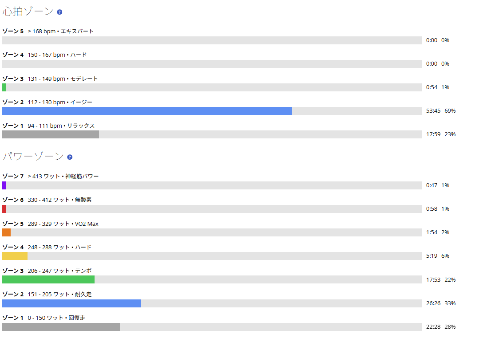
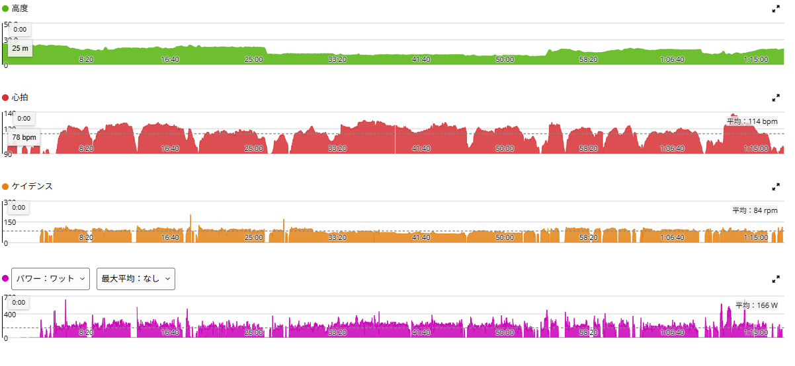

回復走が物足りない。練習がゲームみたいになってきた
昨日は友人2人とゴルビー5分×5本でTSS143.8。その前から負荷も続いていたので、今日は強度を上げず、渡良瀬遊水地まで出て脚を回すだけの日にした。狙いどおり、最後まで踏み込まずに走れている。
ただ、ひとつ問題がある。最近こういう「メニューのない日」が、少し物足りない。走り終えて午後になると「早くまた走りたい」と思っていることが増えた。少し前まではここまで練習そのものを楽しみにする感覚はなかったと思う。

37.40km・NP194W・TSS62.4
- 全体37.40km / 1時間17分48秒 / 獲得61m / 755kJ
- 負荷平均166W / NP194W / IF0.705 / TSS62.4 / 最大641W
- 心拍・回転平均114bpm / 最大138bpm / 平均84rpm
- 環境平均25.1℃ / 最高27.0℃ / 推定発汗758ml
- 効果有酸素TE3.0 / 無酸素TE0.0
数字を見ても、今日はきれいな低強度である。心拍はゾーン5とゾーン4がどちらも0秒、ゾーン3も54秒だけ。53分45秒がゾーン2で、残りはゾーン1だった。ほぼ全部がゾーン1〜2に収まっている。
パワーの方はゾーン7が47秒、ゾーン6が58秒、ゾーン5が1分54秒と、瞬間的には高いところへ入っている。実走なので加速や向かい風で一瞬跳ねるのは避けられない。それでも心拍がまったく上がっていないので、「踏み込まずに回す」という目的は達成できたと思う。

今日はパワーではなく、フォームを見た
メニューがない日は、つい何かしら強度を入れたくなる。でも今日はそれをやらなかった。代わりに意識したのがフォームである。
最近の実走で少しずつ分かってきた「上半身も下半身も力まない」という感覚を、ずっと確認しながら走った。肩や腕に余計な力を入れない。脚でペダルを踏み潰さない。骨盤を安定させる。股関節から自然に脚を動かす。踏むというより、力まず回し続ける。高出力の日は数字を追う必要があるが、今日は身体の使い方を確認する日だった。こう考えると、回復走にもやることはちゃんとある。

練習がゲームみたいになってきた
ここ最近、自転車の練習がかなり楽しい。理由を考えてみると、「できなかったことができるようになる」感覚が増えてきたからだと思う。
以前のゴルビーは「5分間、とにかく頑張る」だった。それが最近は、330W付近へ合わせる、5本の出力差を小さくする、最後までフォームを崩さない、というところまで考える余裕が出てきた。短時間インターバルも同じで、30秒ON／30秒OFFを試したらぬるかった。なら60秒ON／60秒OFFはどうか。友人と話してOFFが長すぎそうだと分かったので、次は60秒ON／30秒OFFを試す。そんなふうに、自分の反応を見ながら次の課題を設定するようになった。
長い実走では長く踏む。ゴルビーでは330W前後を5本そろえる。60/30では5倍付近へ何度も入る。回復走では脱力とフォームを確認する。役割が分かれてきたことで「次はこれを試したい」という気持ちが強くなった。ゲームで新しい技を覚えたり、ステータスを上げたりしている感覚に近い。
一番楽しいのは、数字が高いことそのものではない。昨日までうまくできなかったことが、少しずつできるようになることだ。5本を揃えられるようになる。高出力でも冷静にパワーを調整できる。低ケイデンスでも力まない。実走で「腰で乗る」感覚が少し分かる。Ares 2のクリート位置を調整して違和感が消える。富士ヒルゴールドという目標は遠いし、ローラー1時間300Wもまだ先にある。でも、その途中に小さな課題がたくさんある。今はそれをひとつずつクリアしていくこと自体が面白い。
逆に、回復走が物足りなくなってきた
困るのが、今日のような日である。ゴルビーや60/30のように明確な課題がないと、少し物足りない。走り終わった後も「もう少し走りたい」「午後にもう一回乗りたい」と思ってしまう。
練習意欲としては良いことだと思う。ただし全部の日を高強度にしてしまえば、月・水・金の本当に必要なメニューの質が落ちる。なので今後は、回復日にも小さなテーマを持たせることにした。上半身を脱力する、ペダルを踏み潰さない、骨盤を安定させる、ケイデンスを自然に保つ、加速でも力まない、左右の動きをそろえる。この程度でいい。負荷を上げなくても、技術的には練習できる。今日の回復走は、その形を少し試せた日だった。
TSS62.4でも、中身は回復走
1時間17分走ったのでTSSは62.4まで積み上がった。数字だけ見るとものすごく軽いわけではない。
ただIF0.705、平均心拍114bpm、心拍ゾーン4以上がゼロ、無酸素TEも0.0である。距離と時間があるからTSSが積み上がっただけで、身体を追い込む走りではない。昨日のゴルビー後に脚を止めず、かといって疲労を追加しすぎない。アクティブレストとしては、かなり狙いどおりだったと思う。
明日は友人とMTB
次は友人とのMTBライドである。ロードのトレーニングとはまた違って、路面、バイク操作、短い加速、登り返しと、数字では測りにくい負荷が入る。今日そこへ向けて無理に強度を足さずに終えたのは正解だったと思う。
最近は「もっと練習したい」という気持ちが強くなっている。だからこそ、こういう日に抑えることも必要なのだと思う。ゲームでも、ずっとボス戦だけしているわけではない。装備を整えたり、回復したり、操作を確認したりする時間がある。自転車も、たぶん同じだ。
今日やってみて思ったこと
今日は数字として目立つものが何もない。平均166W、NP194W、平均心拍114bpm。ゴルビーのような「やった感」はない。それでもフォームを意識して、力まずにペダルを回すことはできた。
そして走り終わったあとに思った。もう走りたい。できないことができるようになる、次の課題が見つかる、試してみる、失敗したら変える、うまくいったらまた少し上を狙う。そうやって繰り返しているうちに、いつの間にか練習そのものがゲームみたいになってきた。富士ヒルゴールドまでクリアすべき課題はまだ多い。今はそれが、むしろ楽しみになっている。
次に見るポイント
- フォーム回復走で脱力を再現できるか。高強度でも同じように上半身を力ませず踏めるか
- MTB翌日に脚の重さが残っていないか。MTB後の負荷で次の長い実走を調整する
- 60/305倍付近を反復できるか
- ゴルビー325〜335Wをさらに安定させられるか
- 気持ち「走りたい」を保ちながら、回復日にはちゃんと抑えられるか